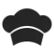

 Zesty Recipe Manager:
Link to the website- Worked on a team of 8 practicing Agile to design a recipe manager that allows users to save, filter, and edit recipes scraped from the web with an API or create their own.
- Utilized
localStorageandJSONmethods such as stringify to store recipe objects as strings.
Git for Congress:
Link to the Github Repository- Worked on a team of 3 to create a file control system for government bills.
- Used machine learning to classify edits to documents.